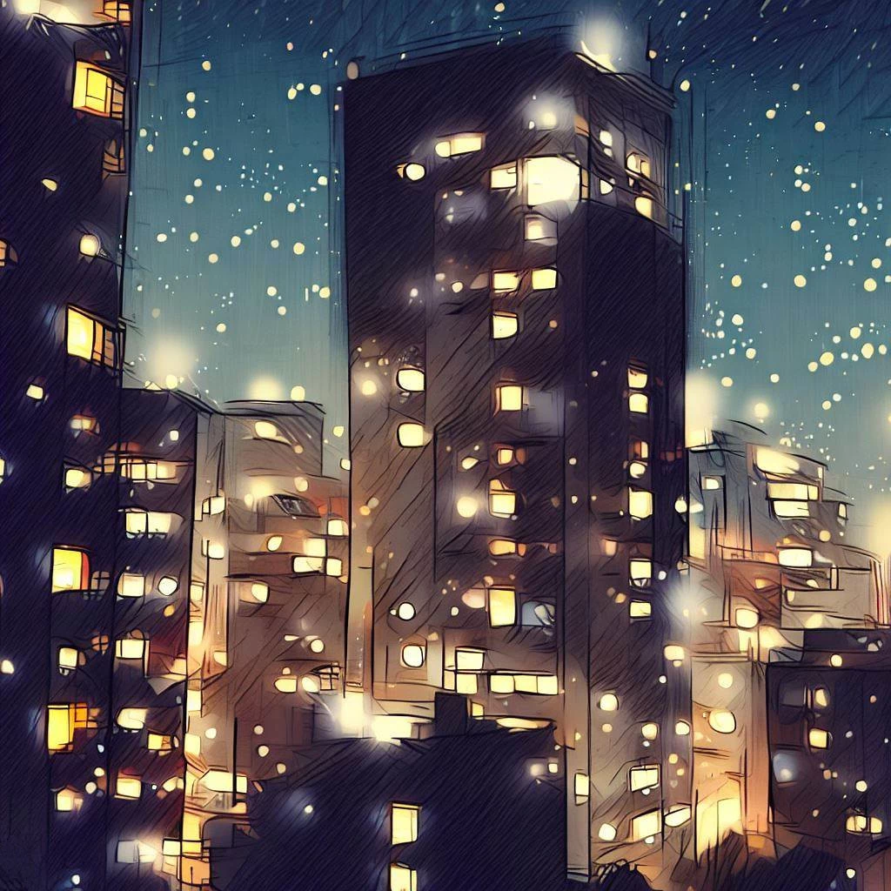
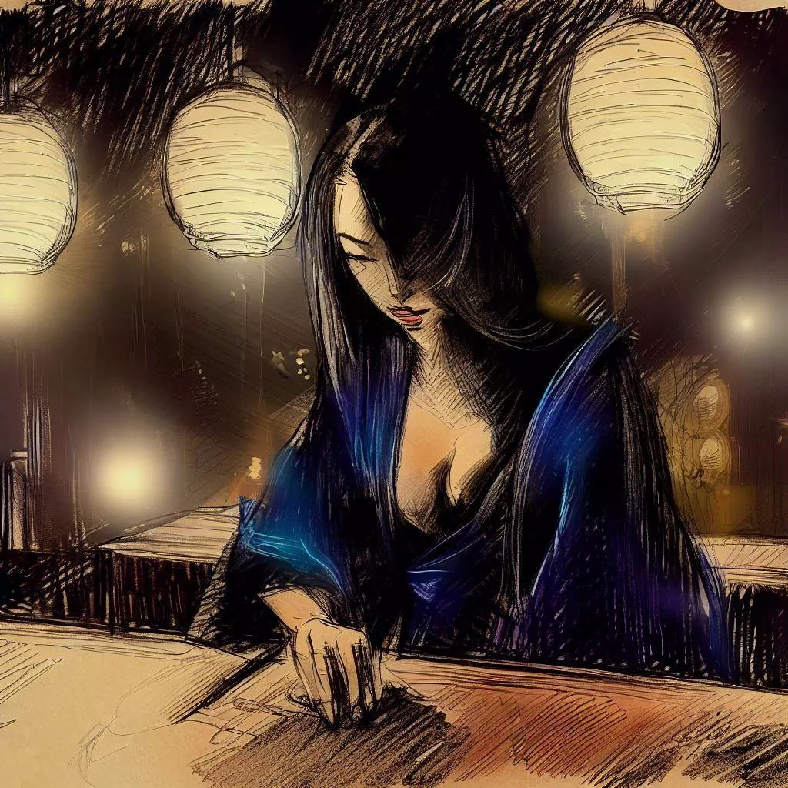
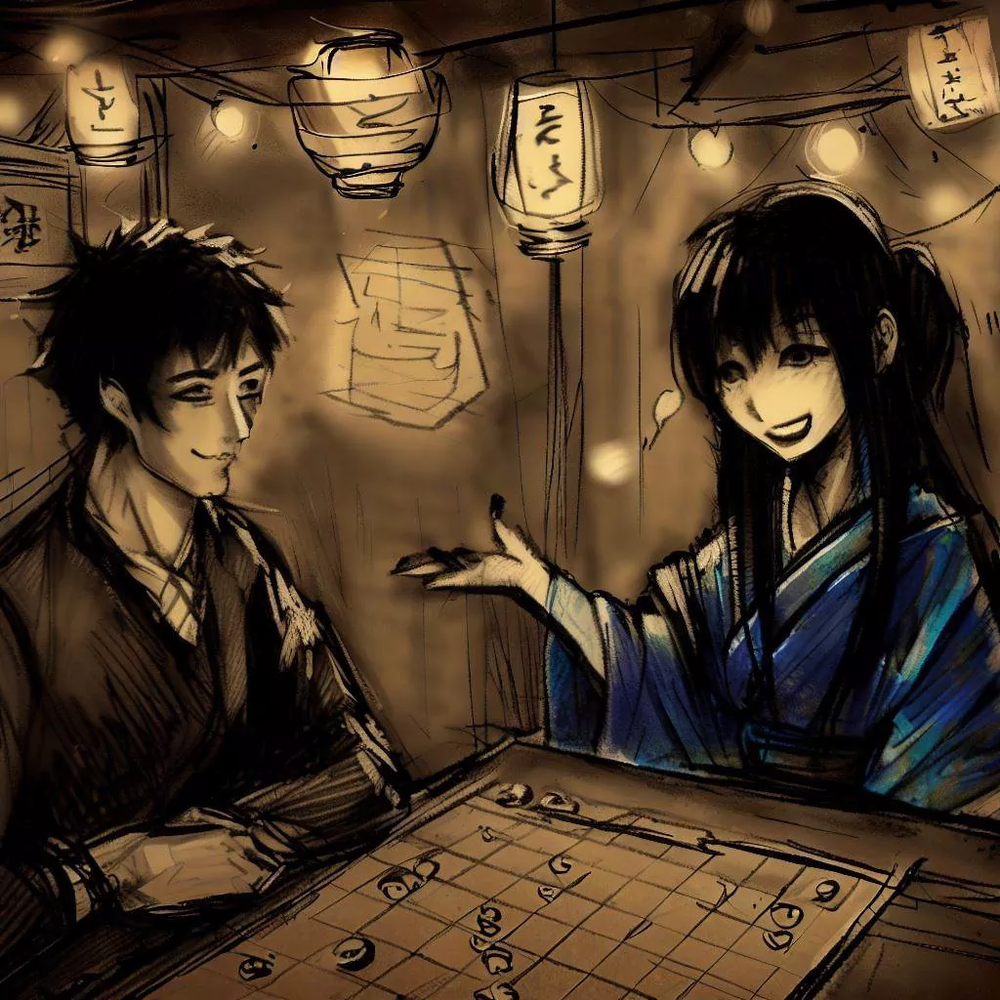
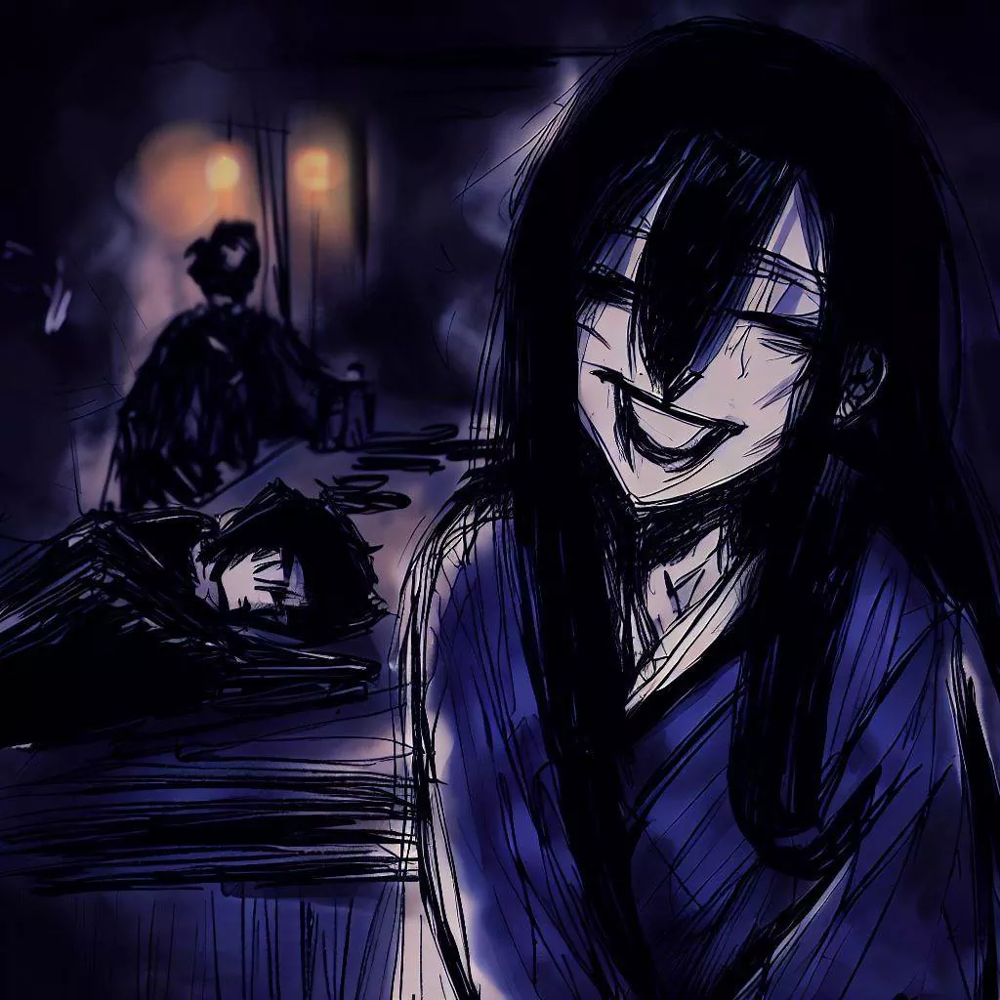

駒妖：王棋游戏的神秘回声
我想花点时间感谢駒妖向我介绍这款引人入胜的策略游戏。 它的魅力和神秘给我的生活留下了深刻的印象。 接下来是我们相遇的故事，一段珍贵的回忆，我想通过这些台词与大家分享。
酒吧的小窝
在我办公室枯燥无味的气氛中度过漫长的一天后，期待已久的一天终于来了，就像解脱一样。 天色渐暗，我离开了冰冷的人工空调，沉浸在大阪柔和而清新的晚风中。
白天的狂热，既沉重又毫无意义，逐渐消退，取而代之的是夜间的宁静。 面对繁星点点的浩瀚和城市的宁静，我的思绪因白天无趣的辛劳而变得杂乱无章。

我让自己穿过城市错综复杂的小巷。 白天的单调似乎在每个角落都消失了，取而代之的是未知的神秘。 摩天大楼在夜间的面纱下柔和而温馨的轮廓，它们在混凝土天空中闪烁的灯光，与白天令人生畏的存在形成鲜明对比。
购物小巷充满活力的气氛、街头餐馆的香味和夜间谈话的低语营造出一幅令人振奋的城市图景。 我的头脑虽然疲惫不堪，但仍在寻求智力上的挑战，从白天的烦恼中分心。 就在那时，我看到了一个不显眼的标志，Regency 酒吧，一个著名的地方，当时最有天赋和最杰出的将棋选手曾经在这里对决过。
隐匿在这寂静的小巷里，这片圣地呈现在我面前，在我的脑海中低语着游戏微妙的召唤。带着神秘和好奇。
游戏酒吧
Regency 酒吧柔和、低调的灯光映入我眼帘，其温暖的氛围唤起了一种宁静的感觉。 这个地方的宁静被许多将棋游戏的过程所渗透，这无疑使几代棋手寻求逃避的夜晚变得活跃起来。
在沉浸在游戏世界之前，我在柜台点了一杯清酒。 古老的镶木地板在我脚下轻轻地抗议，而我的眼睛适应了寂静的光线。 柔和的将棋棋子声、窃窃私语的谈话声和扇子的沙沙声为气氛增添了神秘色彩。 古木的香气混合着焚香的味道，舒缓了我的感官，让我为即将到来的智力活动做好了准备。
各个年龄段的男女主顾都热情地沉迷于他们的将棋游戏。 每个人都以自己的方式表达了与每次击球相关的紧张、喜悦或失望。 这是一场无声的策略和机智的芭蕾舞，在我眼前展开。
寻找晚上的对手，我的目光被一个独自坐在僻静的桌子旁的女人吸引住了。 她安静的存在和微妙的美丽激起了我的好奇心。 我坚定而谨慎地走近，礼貌地微笑了一下，然后给了他一个游戏。

夜课
他对我的提议的回应是脸上洋溢着笑容，这是一种无需多言的默许。
她出人意料地优雅地揭开了之前藏在丝质布下的游戏板。 我的目光立刻落在了比赛场地上，出乎意料的是，比赛场地似乎比平常更紧凑。 这不是我习惯遇到的传统将棋番，而是一个边上有 8 个正方形的更亲密的正方形网格。 我还没来得及说出我的惊讶，优雅的陌生人就率先解开了我的疑惑，她的声音与周围的空气融为一体，犹如夏日的微风。
“这是一个 王棋，国王的游戏，”她自信地宣布。 “我们每个人都有一套 18 件套在那里开始游戏。” 当她透露这些有趣的细节时，她的眼睛里闪过一种被逗乐的表情。

“在这个轮廓的棋盘中，一个人因其明显的威严而脱颖而出，”她指出，指着特别优雅的中心部分。 “这就是公主。以傻瓜的尊严和骑手的无限自由为装饰，她以技巧和力量主持奥吉班，为这个当代的将棋变体注入了浪漫主义之风。”
看到我吃惊的样子，他笑得更灿烂了。 眼底闪过一抹戏谑，一抹恶作剧却让周身更加神秘。 她开始在棋盘上摆棋子，她灵活而精准的手指为我们未来的战场增添了生气。
当她摆好棋子时，我注意到另一个差异：立在 王棋盤 角落的塔楼。 “传统的长矛被这些塔所取代，”她解释道，好像读懂了我的想法，“为我们的比武带来了额外的维度。”
现在棋子已经摆好了，每一个车，每一个将军，每一个兵都完美地排列在一起。 预料到即将到来的战斗，我发现自己无法抗拒地被这个新揭开的谜题所吸引，碎片的金色闪光和我神秘对手闪闪发光的目光让我更加着迷。
圣灵的考验
时钟的滴答声敲响了时间的流逝，而战斗的寂静只被棋盘上棋子的轻微声响打断。 主教行动果断，骑士纵身一跃，公主以惊人的效率称霸战场。 几乎难以察觉的战斗节奏充满了房间，给人一种明显的紧张感。
凭借令人不安的技巧，我神秘的对手指挥了他的棋子。 那些被俘而不是被消灭的人被巧妙地重新引入，跳伞在我的后方，为战斗注入了变化的动力。 每一步都是战术课，每一块棋子都通过无形的纽带与另一块棋子相连，这种纽带几乎是外科手术般的细致。
我坚持下去，以坚定的决心处理我的棋子，用精心策划的防御来抵挡他的猛攻。 然而，每一个决定似乎都在消耗我的能量储备，每一个动作都变得越来越重。 我的眼皮开始沉重，疲倦试图占据上风。
当我努力睁开眼睛时，睡眠，那个隐秘的对手，接管了我。 我的身体筋疲力尽，酒吧的灯光在我变暗的眼睛前跳动。 我陷入一片舒缓的黑暗中，最后一个在我记忆中根深蒂固的画面是我神秘对手胜利的微笑，它像遥远的月亮在漆黑的天空中闪烁。

黎明的回声
时间仿佛蒸发了，被笼罩在脑海中的黑暗吞没了。 向黑暗的过渡是平稳而无声的，让我在迷雾中航行。 我的思绪在一片混乱的海洋中翻腾着，挣扎着要从黑暗中走出来。
就像在夜里迷失的小船，我终于找到了回到黎明的路。 我睁开眼睛，看到几乎没有变化的房间，沐浴在黎明柔和的光线中。 奥吉班像我离开时一样站着，默默地见证了夜晚的战斗。 只是，此时对手的位子已经空了，少女身上的神秘气息，如破晓之梦一般消散。
感觉到他不在的重量，一种无法形容的空虚感，让空气变得沉重，房间更安静。 我的目光滑过纸板，落在棋盘旁边一张折叠整齐的纸上。我有些惶恐地抓住了它。
上面刻着一个词，“谢谢”，还有一个名字——“駒妖”。 一个优雅的标志，是这次短暂而引人注目的相遇的最后遗迹，在 Regency 酒吧与难以捉摸而迷人的 駒妖 一起玩 王棋。